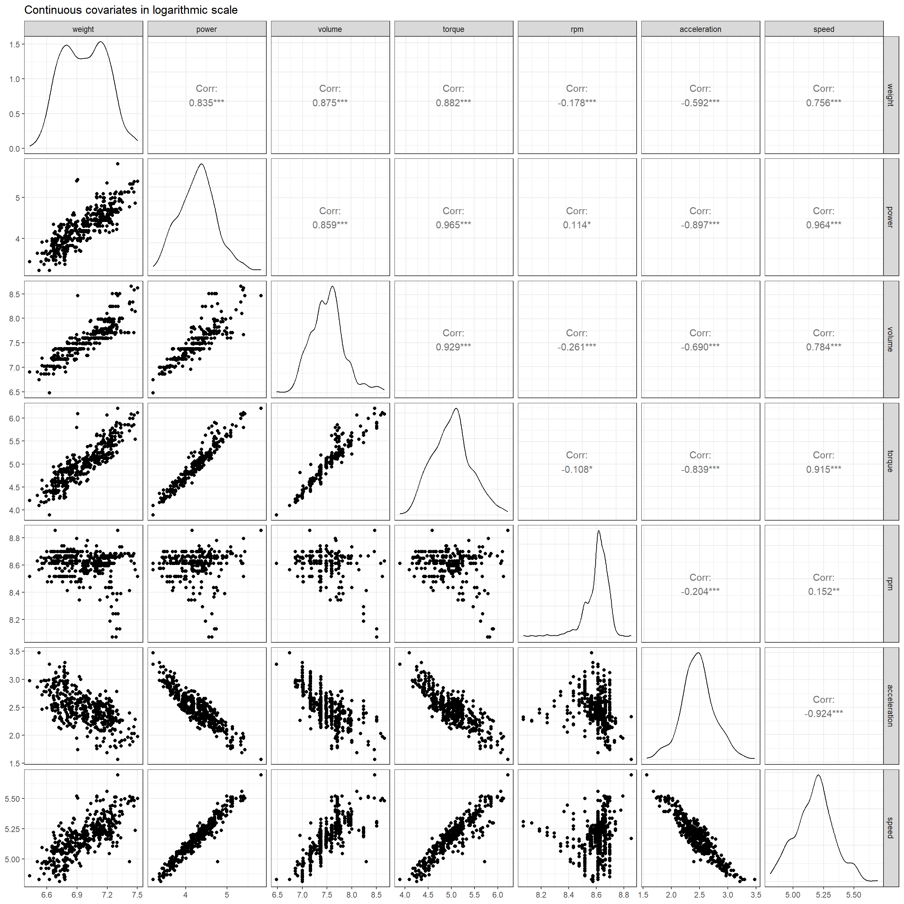
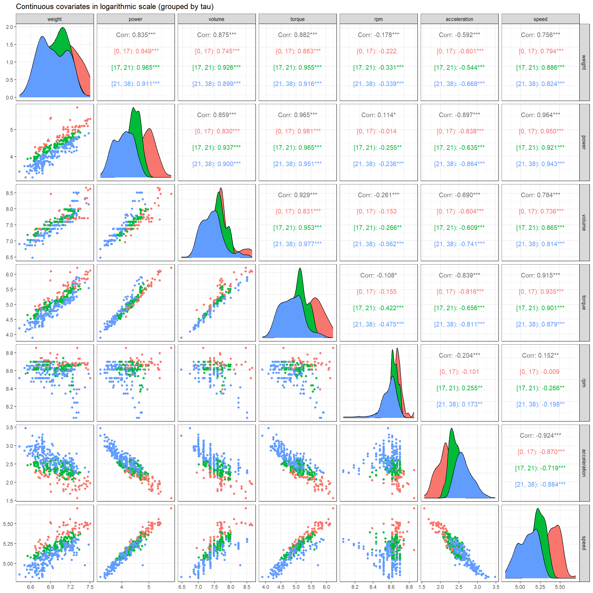
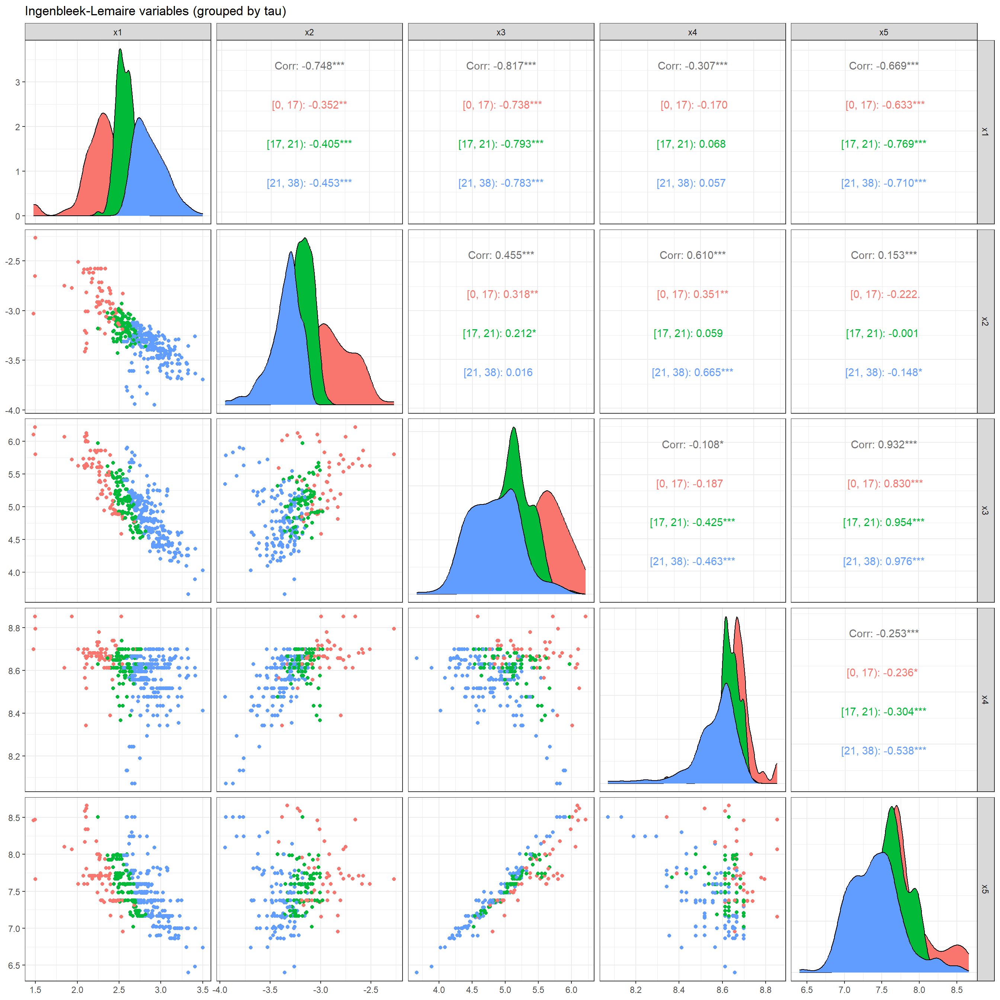
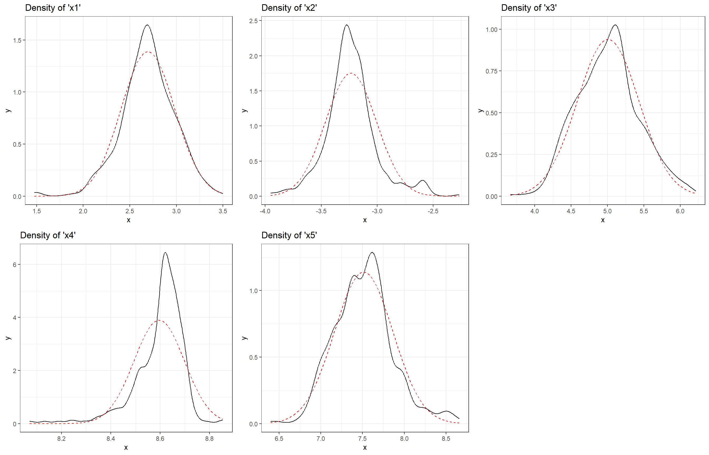
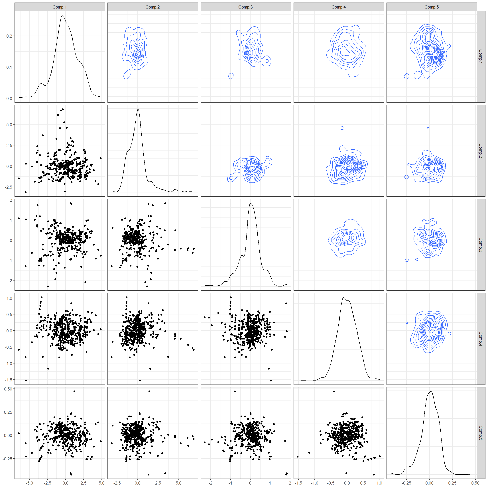
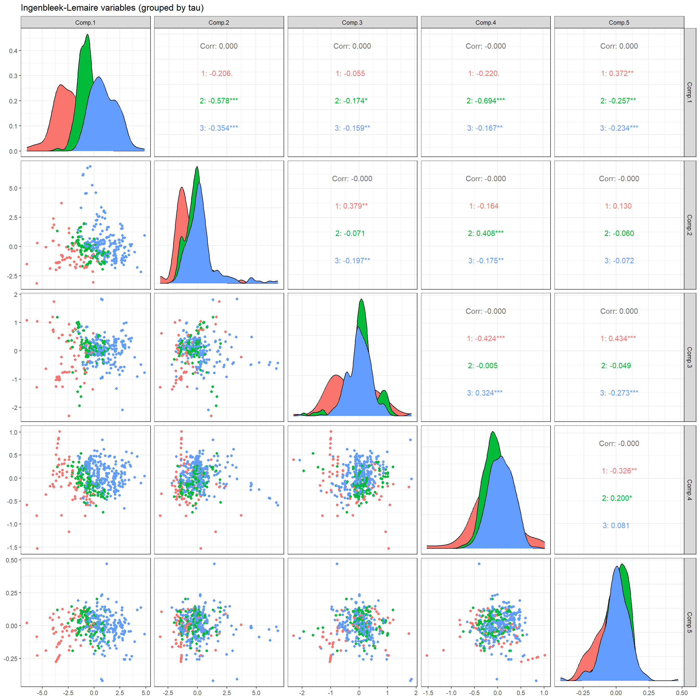
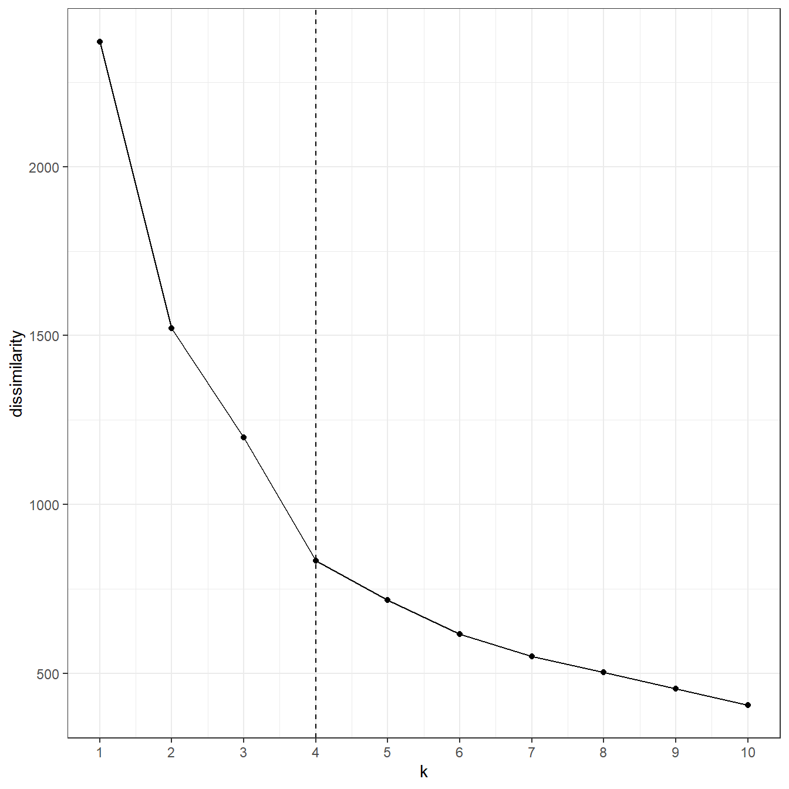

renv::status()No issues found -- the project is in a consistent state.# renv::restore()
# renv::snapshot()
# renv::clean()
# renv::remove( c("reticulate") )
# renv::install( c("reticulate", "keras3", "data.table", "GGally", "gridExtra") )This follows the tutorial from “Unsupervised Learning What is a Sports Carl”.
Use renv to manage packages.
renv::status()No issues found -- the project is in a consistent state.# renv::restore()
# renv::snapshot()
# renv::clean()
# renv::remove( c("reticulate") )
# renv::install( c("reticulate", "keras3", "data.table", "GGally", "gridExtra") )Set seed.
seed <- 100
Sys.setenv(PYTHONHASHSEED = seed)
set.seed(seed)
#reticulate::py_set_seed(seed)
#tensorflow::tf$random$set_seed(seed)Frobenius loss function.
frobenius_loss <- function(x, y) {
(x - y)^2 %>%
as.matrix() %>%
sum() %>%
{ . / nrow(x) } %>%
sqrt()
}Only load absolutely essential packages.
library(magrittr)
library(ggplot2)
library(data.table)Loading data-set. Prefer using data.table, see here for a comparison on the syntax.
df <- data.table::fread("data/SportsCars.csv")
str(df)Adding additional columns and a visialization.
df[, ':='(
weight_log = log(weight),
max_power_log = log(max_power),
cubic_capacity_log = log(cubic_capacity),
max_torque_log = log(max_torque),
max_engine_speed_log = log(max_engine_speed),
seconds_to_100_log = log(seconds_to_100),
top_speed_log = log(top_speed)
) ]
# Names of column variables for selection
vars <- c("weight_log", "max_power_log", "cubic_capacity_log", "max_torque_log", "max_engine_speed_log", "seconds_to_100_log", "top_speed_log")
# Display names of column variables for plotting
names <- c("weight", "power", "volume", "torque", "rpm", "acceleration", "speed")
df[, ..vars] %>% na.omit() %>%
GGally::ggpairs(
title = "Continuous covariates in logarithmic scale",
columnLabels = names) +
theme_bw()
Adding the expert opinion on defining a sports car.
sports_type <- base::cut(
df$tau,
breaks = c(0, 17, 21, 100),
labels = c("[0, 17)", "[17, 21)", "[21, 38)"))
df[, sports_type := sports_type ]
vars <- c(vars, "sports_type")
df[, ..vars] %>% na.omit() %>%
GGally::ggpairs(
title = "Continuous covariates in logarithmic scale (grouped by tau)",
columnLabels = names,
columns = 1:7,
mapping = aes(colour = sports_type)) +
theme_bw()
Defining the variables used by Ingenbleek-Lemaire for analysis.
df[, ':='(
x1 = log(weight/ max_power),
x2 = log(max_power / cubic_capacity),
x3 = log(max_torque),
x4 = log(max_engine_speed),
x5 = log(cubic_capacity)
) ]
df[, .(x1, x2, x3, x4, x5, sports_type)] %>% na.omit() %>%
GGally::ggpairs(
title = "Ingenbleek-Lemaire variables (grouped by tau)",
columns = 1:5,
mapping = aes(colour = sports_type)) +
theme_bw()
Only store the that we want to continue working with. Plot kernel density estimations and a normal distribution density estimation.
# All names not equal to x1, x2, ... x5
vars <- df %>% names() %>% { .[ !( . %in% c("x1", "x2", "x3", "x4", "x5") ) ] }
df[, (vars) := NULL] # delete uninteresting columns
f <- function(x) {
ggplot() + geom_density(aes(x)) +
geom_function(
fun = dnorm, args = list(mean = mean(x), sd = sd(x)),
col = "red", linetype = "dashed") +
theme_bw()
}
p1 <- f(df[, x1]) + ggtitle("Density of 'x1'")
p2 <- f(df[, x2]) + ggtitle("Density of 'x2'")
p3 <- f(df[, x3]) + ggtitle("Density of 'x3'")
p4 <- f(df[, x4]) + ggtitle("Density of 'x4'")
p5 <- f(df[, x5]) + ggtitle("Density of 'x5'")
gridExtra::grid.arrange(grobs = list(p1, p2, p3, p4, p5), ncol = 3)
First normalize design matrix.
# Alternatively use '?base::scale'...
f <- function(column) {
j <- column - mean(column)
j <- j / sd(j)
j
}
df <- apply(df, MARGIN = 2, f)
apply(df, MARGIN = 2, function(j) mean(j)) # centered x1 x2 x3 x4 x5
-1.523585e-16 -7.886153e-16 -9.746453e-17 2.072879e-15 -7.468578e-17 apply(df, MARGIN = 2, function(j) sd(j)) # scaledx1 x2 x3 x4 x5
1 1 1 1 1 PCA the of the (standardized design) matrix.
X <- as.matrix(df)
pca <- stats::princomp(X, cor = TRUE)
pca$loadings
Loadings:
Comp.1 Comp.2 Comp.3 Comp.4 Comp.5
x1 0.558 0.103 0.817
x2 -0.412 -0.482 -0.595 0.353 0.345
x3 -0.539 0.268 0.404 -0.689
x4 -0.126 -0.705 0.678 0.133 -0.102
x5 -0.461 0.434 0.427 0.165 0.624
Comp.1 Comp.2 Comp.3 Comp.4 Comp.5
SS loadings 1.0 1.0 1.0 1.0 1.0
Proportion Var 0.2 0.2 0.2 0.2 0.2
Cumulative Var 0.2 0.4 0.6 0.8 1.0summary(pca)Importance of components:
Comp.1 Comp.2 Comp.3 Comp.4 Comp.5
Standard deviation 1.7221233 1.2881142 0.52653074 0.2971918 0.097444561
Proportion of Variance 0.5931417 0.3318477 0.05544692 0.0176646 0.001899088
Cumulative Proportion 0.5931417 0.9249894 0.98043632 0.9981009 1.000000000pca$scores %>%
as.data.frame() %>%
GGally::ggpairs(
diag = list(GGally::wrap("barDiag")),
upper = list(continuous = "density")) +
theme_bw()
Now let us recreated the grouped plot again using the principal components.
cbind(pca$scores, sports_type) %>%
GGally::ggpairs(
title = "Ingenbleek-Lemaire variables (grouped by tau)",
columns = 1:5,
mapping = aes(colour = as.factor(sports_type))) +
theme_bw()
First install Keras API with Tensorflow as its back-end. The instructions are from posit (click here)
# Installs everything with the following (uncomment and execute (as administrator))...
# reticulate::install_python(version = "3.11", force = TRUE)
# keras3::install_keras(backend = "tensorflow", python_version = ">=3.9,<=3.11", gpu = FALSE)Bottleneck neural network model.
bottleneck_with_three_layers <- function(q00, q11, q22) {
keras3::clear_session()
tensorflow::set_random_seed(4349)
input <- keras3::layer_input(
shape = c(q00), dtype = 'float32', name = 'Input')
encoder <- input %>%
keras3::layer_dense(
units = q11, activation = 'tanh', use_bias = FALSE, name = 'Layer1') %>%
keras3::layer_dense(
units = q22, activation = 'tanh', use_bias = FALSE, name = 'Bottleneck')
decoder <- encoder %>%
keras3::layer_dense(
units = q11, activation = 'tanh', use_bias = FALSE, name = 'Layer3') %>%
keras3::layer_dense(
units = q00, activation = 'linear', use_bias = FALSE, name = 'Output')
model <- keras3::keras_model(
inputs = Input, outputs = Decoder)
model %>% keras3::compile(
optimizer = optimizer_nadam(), loss = 'mean_squared_error')
model
}Bottleneck neural network architecture.
q0 <- ncol(X); q1 <- 7; q2 <- 2Fitting the model. Does not work on my machine… skip it…
# bn_nn <- bottleneck_with_three_layers(q0, q1, q2)
# summary(bn_nn)Employ clustering algorithm.
k_max <- 10
k_avg <- colMeans(X)
center <- list()
twcd <- array(NA, c(k_max)) # total within-cluster dissimilarity
classifier <- array(NA, c(k_max, nrow(X)))
twcd[1] <- X^2 %>% as.matrix() %>% colSums() %>% sum()
for(k in 2:k_max) {
if (k == 2)
k_res <- stats::kmeans(X, 2)
if (k > 2)
k_res <- stats::kmeans(X, k_center)
twcd[k] <- k_res$withins %>% sum()
classifier[k, ] <- k_res$cluster
center[[k]] <- k_res$centers
k_center <- array(NA, c(k + 1, ncol(X)))
k_center[k + 1, ] <- k_avg
k_center[1:k, ] <- k_res$centers
}Use elbow method to determine the optimal clustering size of 4.
data <- as.data.frame(cbind(dissimilarity = twcd, k = base::seq_along(twcd)))
ggplot(data = data, aes(x = k, y = dissimilarity)) +
geom_point() + geom_line() + scale_x_continuous(breaks = 1:k_max) +
geom_vline(aes(xintercept = 4), linetype = "dashed") +
theme_bw()
Look like most sports cars fall into cluster 2 (50 sports cars out of 59 total cars).
nr_cluster <- 4
classifier[nr_cluster, ] %>% base::table() # number of points per cluster.
1 2 3 4
145 59 33 238 classifier[nr_cluster, ] %>%
as.factor() %>%
{ cbind(df, sports_type, . ) } %>%
as.data.frame() %T>%
{ names(.) <- c("x1", "x2", "x3", "x4", "x5", "sports_type", "cluster") } %>%
dplyr::group_by(sports_type, cluster) %>%
dplyr::summarise(COUNT = dplyr::n()) # count number of groups`summarise()` has grouped output by 'sports_type'. You can override using the
`.groups` argument.# A tibble: 10 × 3
# Groups: sports_type [3]
sports_type cluster COUNT
<dbl> <dbl> <int>
1 1 2 50
2 1 3 1
3 1 4 21
4 2 1 13
5 2 2 9
6 2 3 4
7 2 4 105
8 3 1 132
9 3 3 28
10 3 4 112center[[nr_cluster]] # cluster centers for cluster group 4 x1 x2 x3 x4 x5
1 1.0121880 -0.6501360 -1.119408 -0.0871225 -1.0499744
2 -1.6982877 1.6380220 1.532052 0.6411382 1.0340969
3 0.1984107 -1.4345067 1.030121 -2.4982959 1.4680926
4 -0.2231758 0.1889292 0.159366 0.2405436 0.1797795Skip the rest…